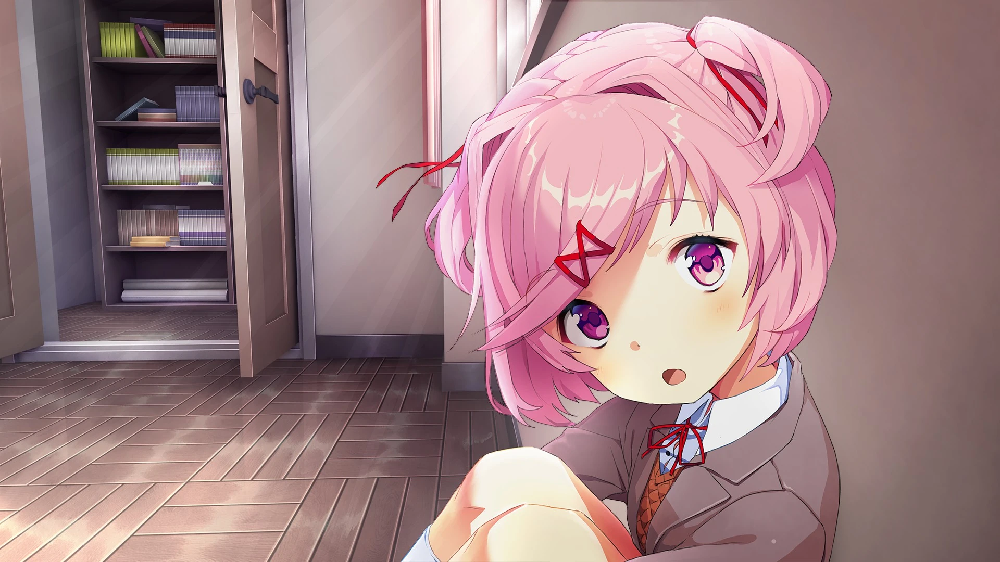
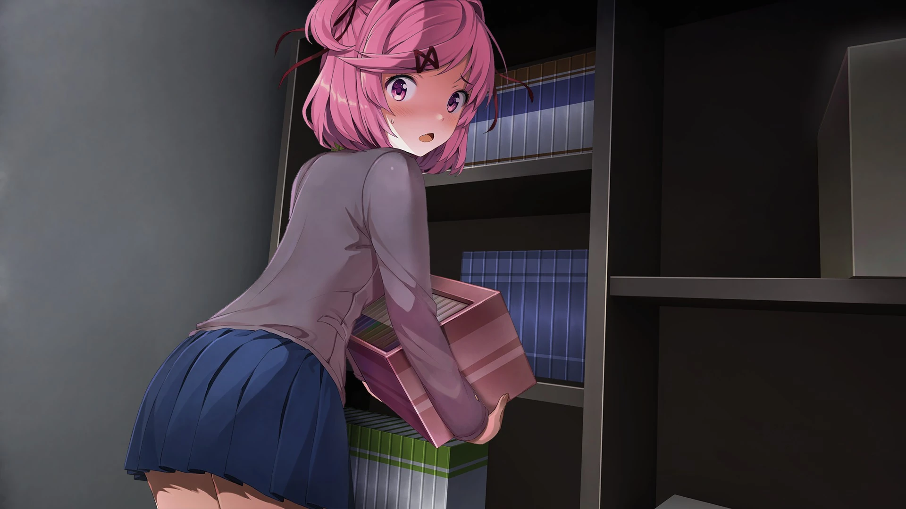
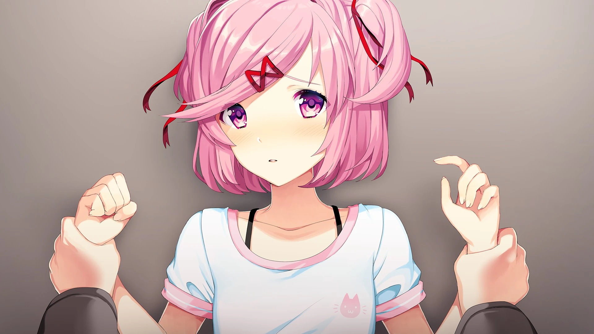
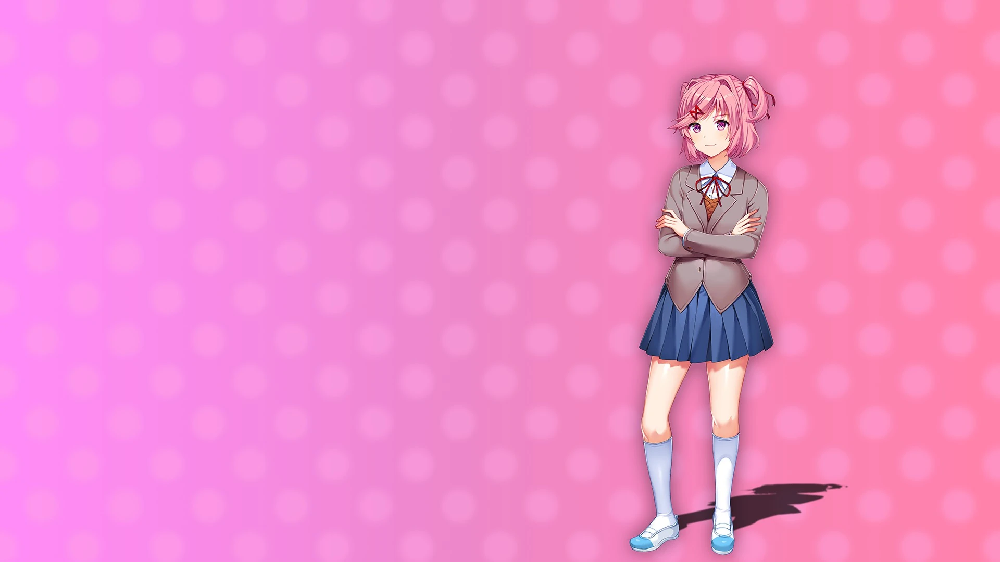
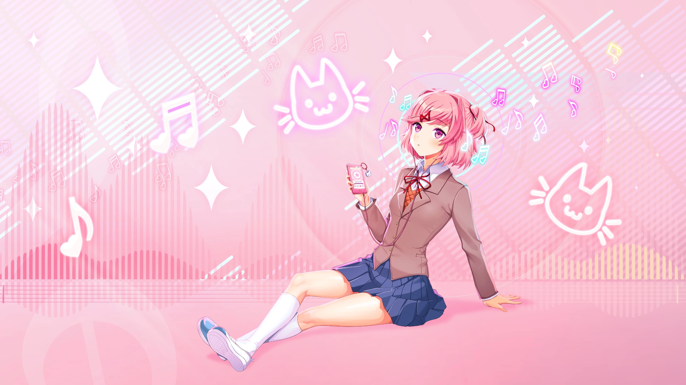
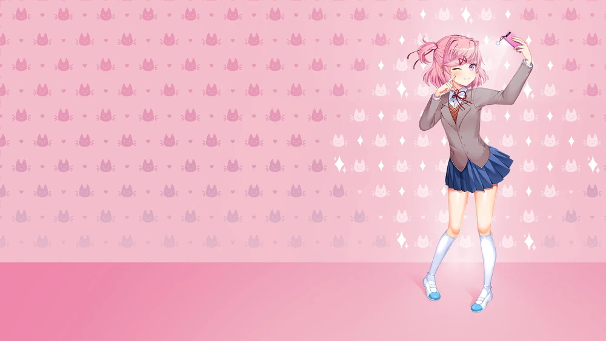
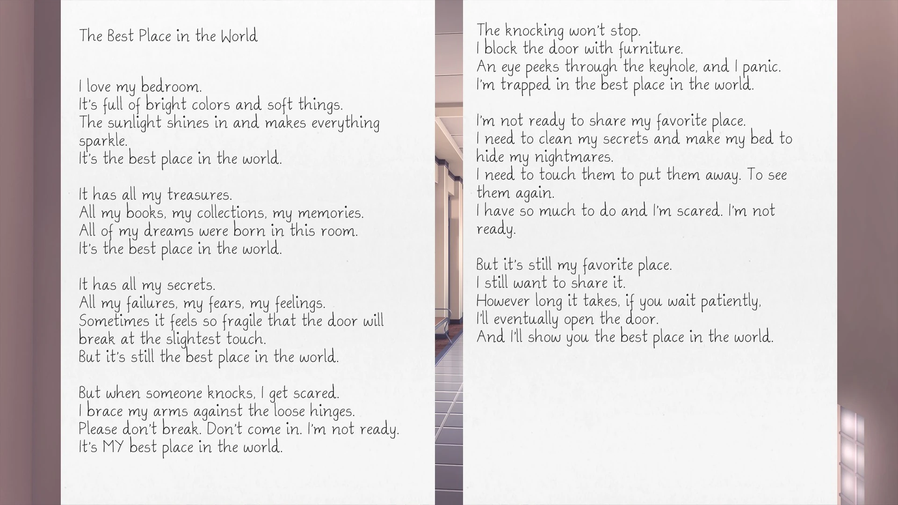
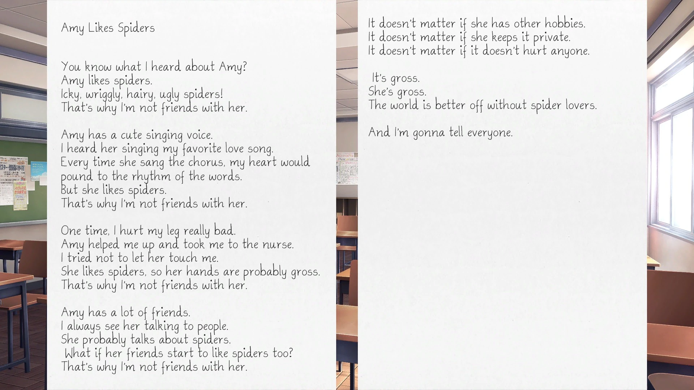
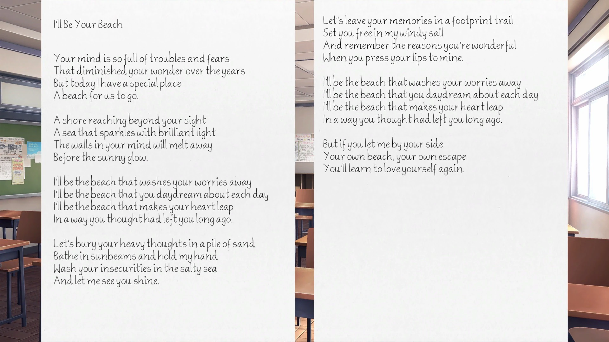
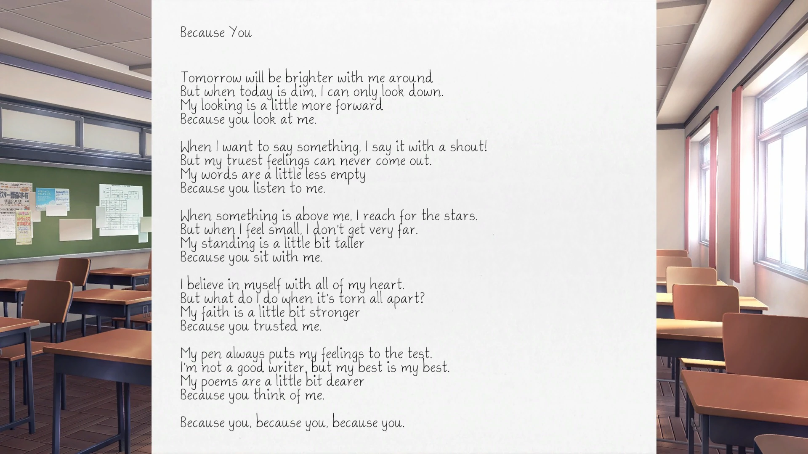
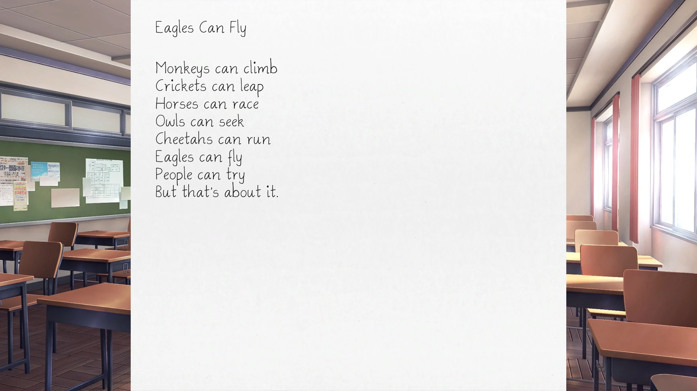
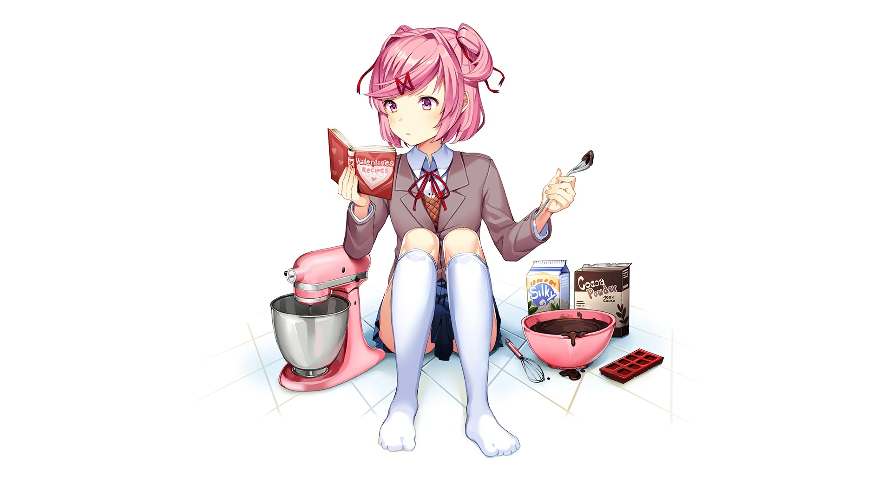
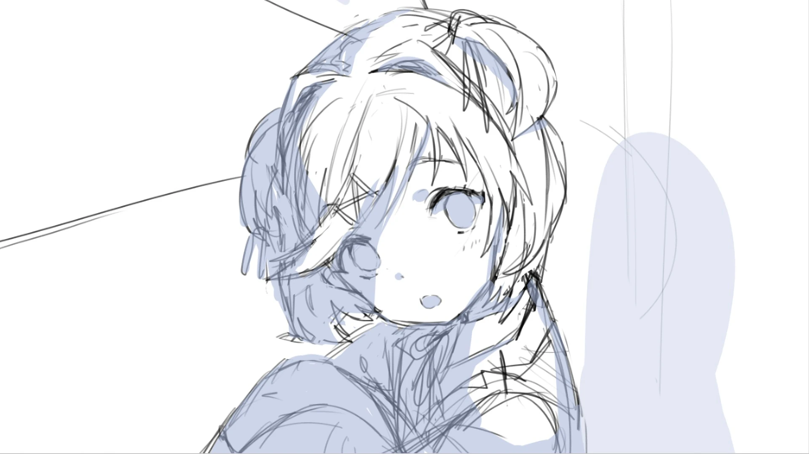
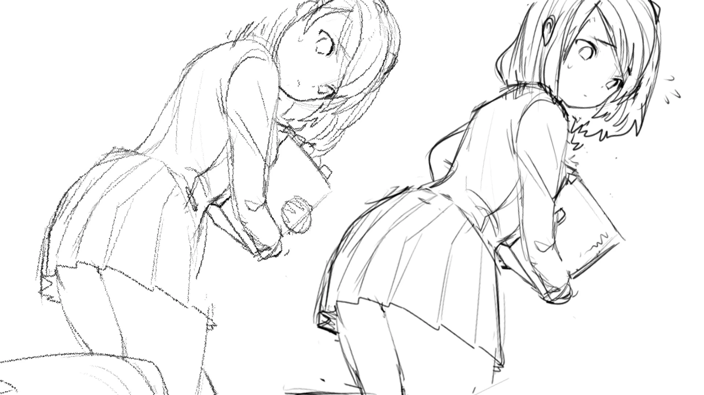
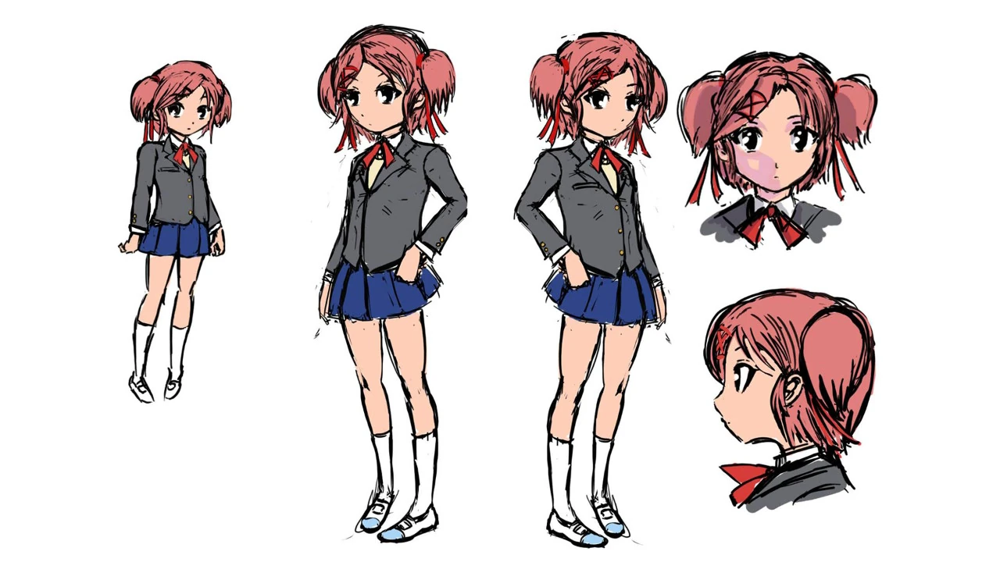
Durant les mini-jeux de poésie, vous devez choisir le plus de mots qui rendent Natsuki heureuse. Un seul poème est nécessaire pour obtenir cette illustration.
Durant les mini-jeux de poésie, vous devez choisir le plus de mots
qui rendent Natsuki heureuse. Deux poèmes dédiés à Natsuki sont
nécessaires pour obtenir cette illustration.
Lorsque vous aurez le choix entre Natsuki et Yuri, choisissez Natsuki.
Terminez l'histoire parallèle « Respect 1 ».
Possédé dès le début du jeu. Exclusif aux versions iOS et Android
de Doki Doki Literature Club.
Terminez l'histoire parallèle « Balance 2 ».
Jouez à travers " Balance "
Jouez à DDLC
Jouez à DDLC
Écris les trois poèmes pour Natsuki
Jouez à DDLC
Dans l'acte 1, écrivez un poème pour un personnage
différent à chaque chapitre.
Pendant le jeu de poésie, écrivez un poème parfait pour Natsuki.
Dans l'acte 1, écrivez les trois poèmes pour Natsuki.
Dans l'acte 2, découvrez la scène « Joue avec moi » de Natsuki.